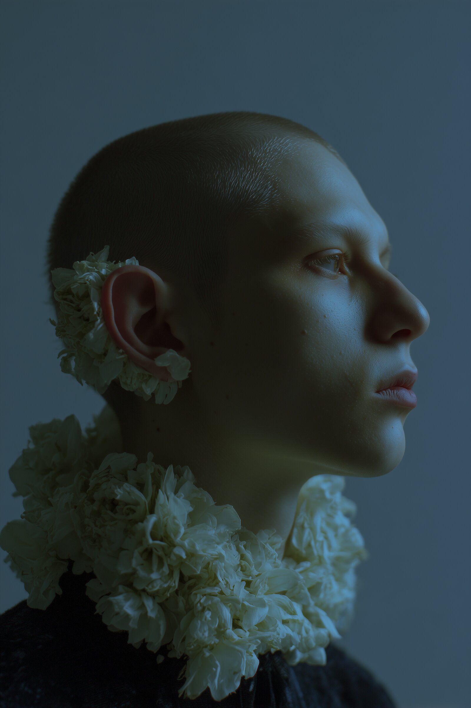
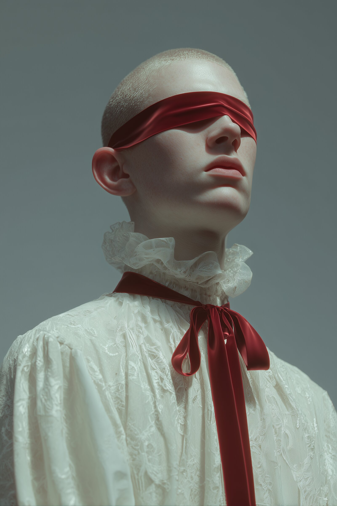
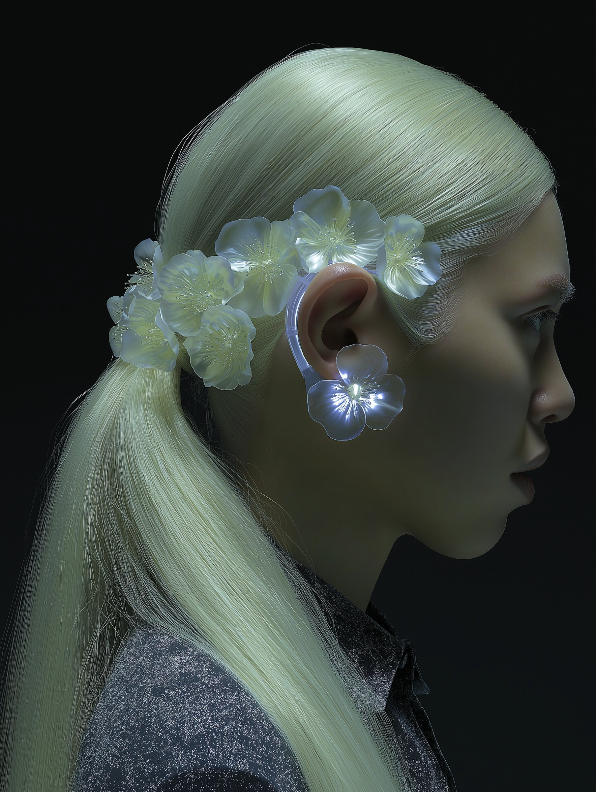
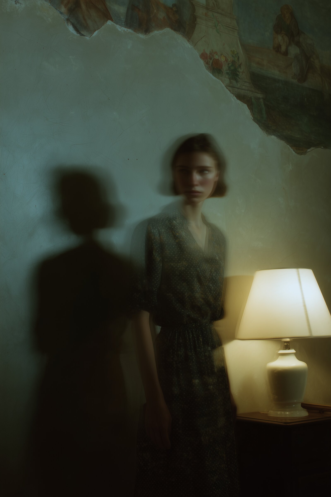
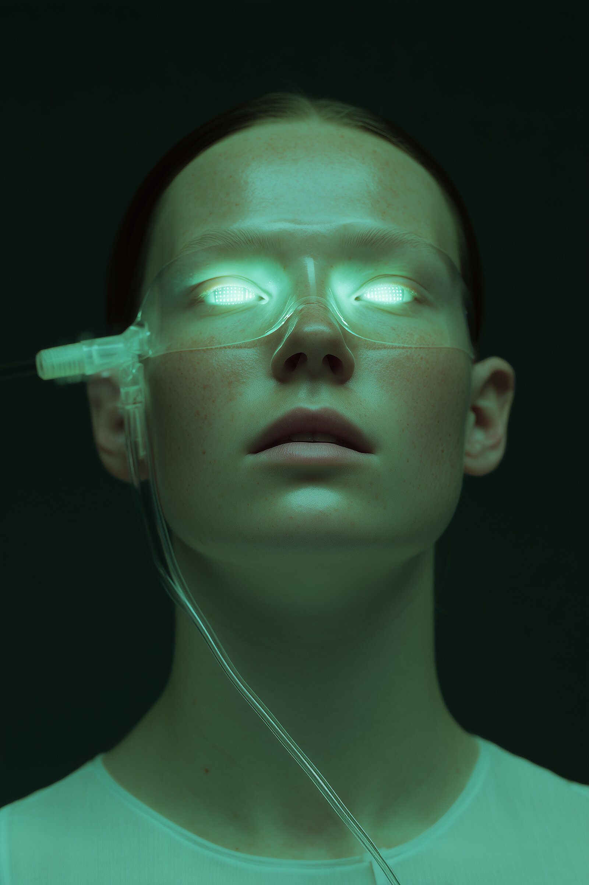

Kimlik · Hareketli görüntü · Etkileşimli
Uzun gölgeler ve sıcak bir ışık stüdyosu.
Sinematik marka dünyaları tasarlıyoruz — kimlik sistemleri, filmler ve lansman haftasından ziyade uzun süreli web siteleri.
Kur. MMXXIIAmsterdam & Lizbon
Manifesto · Bölüm I
Uzun süre ayakta kalacak tek bir şey yapmak isteyen müşteriler için çalışıyoruz.
Ne yapıyoruz
Kondu, marka sistemleri, hareketli görüntü ve mühendislikli web arasında çalışan sekiz kişilik bir stüdyodur. Kurucular, kültürel kurumlar ve küçük ürün ekipleriyle birlikte çalışıyoruz.
Her iş, haftalar süren dinleme ile başlar — referanslar, arşivler, yüz yüze konuşmalar — ve yıllarca büyüyebilecek bir sistemle sona erer.
Nasıl çalışıyoruz
Yılda altı proje kabul ediyoruz. Küçük ekipler, uzun zaman çizelgeleri, cömert revizyon turları. Parlatılmış sunumlar yerine çalışma dosyalarını paylaşıyor ve prototipi baştan sona açık tutuyoruz.
İşaretler, tipografi, hareket ve kod; tamamlandığında, yıllar sonra dahi uzatabileceğiniz sessiz bir kullanım kılavuzu ile teslim edilir.
Uygulama · Bölüm II
-
/ 01
Kimlik sistemleri
Logotipler, tipografi sistemleri ve bir markayı yüzeylerde, on yıllar boyunca ve sessiz satın almalarda ayakta tutan yazılı kurallar.
-
/ 02
Marka filmleri
Başlık sekansları, marka filmleri ve döngüsel dokular; küçük bir iç ekip tarafından yazılır, çekilir ve tamamlanır.
-
/ 03
Dijital yüzeyler
Ağırlık, yavaşlık ve uzun raf ömrü için tasarlanmış editoryal web siteleri, portfolyolar ve ürün yüzeyleri.
-
/ 04
Editoryal & baskı
Arşivciler, fotoğrafçılar ve mümkün olan en küçük ekip ile hazırlanan kitaplar, kataloglar ve baskı odaklı kampanyalar.
Alan · Bölüm III
Kısa, canlı ve güncel işlerden oluşan küçük bir arşiv.
Yılda altı proje, hiçbir ikisi aynı olmaz. Aşağıda son on sekiz ayın kısa, seçilmiş bir kesiti yer alıyor.





Yaklaşım · Bölüm IV
Dört yavaş aşamada çalışıyoruz. Her biri revizyona açık ve hiçbiri aceleyle gerçekleşmiyor.
-
Dinle
Haftalar süren konuşmalar. Referansları, arşivleri, eskizleri ve henüz yanıtlamadığımız soruları paylaşıyoruz.
-
Çerçevele
Tek sayfalık yazılı yönelim — projenin geri kalanında her görsel ve editoryal kararın asılacağı omurga.
-
Yap
Küçük partiler halinde yavaş yinelemeler. Parlak sunumlar yerine çalışma dosyalarını paylaşıyor ve haftalık olarak seninle birlikte düzenliyoruz.
-
Teslim et
Tipografi, hareket, kod ve yıllar sonra dahi uzatabileceğin sessiz bir kullanım kılavuzu içeren eksiksiz bir sistem.
Sohbet · Bölüm V
Yavaşça yapılmaya değer bir şeyin var mı?
Uygunluk
Yılda altı projeyi kabul ediyoruz. Bir sonraki boşluk Sonbahar 2026. Erken görüşmeler bahar sonundan itibaren hoş karşılanır.